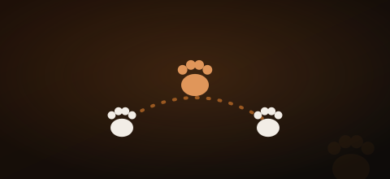

Lo último
Adopción responsable
El primer paso
Protectoras de perros PPP en España — Adopta un Rottweiler
Lista de asociaciones especializadas en rescate PPP: Zooasis, SOS PPP España, Life4Pitbulls y más.

Requisitos para tener un Rottweiler en España 2026
Licencia PPP, seguro RC, bozal y documentación obligatoria. Todo paso a paso.
Ley de Bienestar Animal 2023 — Qué cambia para tu perro
Curso obligatorio, seguro RC, esterilización y el futuro de los perros PPP.
Cría a un Rottweiler sano y feliz
Qué comer, cuánto y qué evitar
Nutrientes esenciales por etapas, alimentos tóxicos y cómo prevenir la torsión gástrica.

Displasia en Rottweiler — Síntomas, tratamiento y prevención
La enfermedad articular más frecuente de la raza. Todo lo que necesitas saber para detectarla y tratarla.
Enfermedades más comunes del Rottweiler
Displasia, torsión gástrica, osteosarcoma... síntomas a vigilar y cómo prevenirlos.

¿Cuánto cuesta tener un Rottweiler en España?
Gastos reales sin sorpresas: adopción, veterinario, alimentación, seguro y gastos imprevistos.
Un Rottweiler equilibrado empieza aquí

Cómo educar un Rottweiler desde cachorro
Socialización, órdenes básicas, refuerzo positivo y los errores más comunes que cometen los dueños.
Rottweiler con niños — ¿Es realmente peligroso?
Mitos vs realidad, claves para una convivencia segura y la respuesta honesta que nadie da.
La historia de Maya — La Rottweiler que lo cambia todo
Conoce a Maya y descubre por qué miles de personas han cambiado su visión de los perros PPP.
Conoce mejor a la raza

Rottweiler macho vs hembra — ¿Cuál elegir?
Diferencias reales de tamaño, carácter y educación para que tomes la mejor decisión.

Cómo socializar un Rottweiler adulto
Paso a paso para presentarlo a otros perros, personas y situaciones nuevas con éxito.
Ejercicio para Rottweiler — Cuánto necesita y qué actividades
Por edad, actividades recomendadas y errores que debes evitar.
¿Puede vivir un Rottweiler en un piso?
La respuesta honesta con condiciones reales, qué espacio necesita y cómo adaptarlo.
Rottweiler y gatos — ¿Pueden convivir?
Guía de presentación paso a paso, señales de alerta y cómo organizar el hogar.
Seguro RC obligatorio para Rottweiler — Cómo elegirlo
Qué cubre, cuánto cuesta, capital mínimo y cómo no quedarte sin cobertura real.
Historia y origen del Rottweiler — Del Imperio Romano a hoy
2.000 años de historia de una raza extraordinaria que merece ser conocida.
Lo que todo dueño necesita saber
Rottweiler cachorro — La guía que ojalá hubiera existido
Primeras semanas, socialización, alimentación, vacunas y los errores que no debes cometer.
Rottweiler agresivo — Causas reales y cómo actuar
Las causas reales de la agresividad, qué no hacer nunca y cuándo llamar a un profesional.
Bozal para Rottweiler — Cuál elegir, tallas y obligaciones
Es obligatorio por ley. Tipos, cómo medir, precios y cómo acostumbrar a tu perro sin estrés.
Esperanza de vida del Rottweiler — Cuánto viven y cómo alargarla
Entre 9 y 12 años de media. Factores clave de longevidad y qué puedes hacer desde el primer día.
Temperamento del Rottweiler — Carácter real, sin mitos
Leal, inteligente, tranquilo y protector. Así es el Rottweiler que no sale en los titulares.

Microchip para Rottweiler — Obligatorio para PPP en España
Proceso, precio, registro en el RIAC y qué pasa si tu Rottweiler no está identificado.